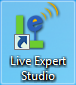
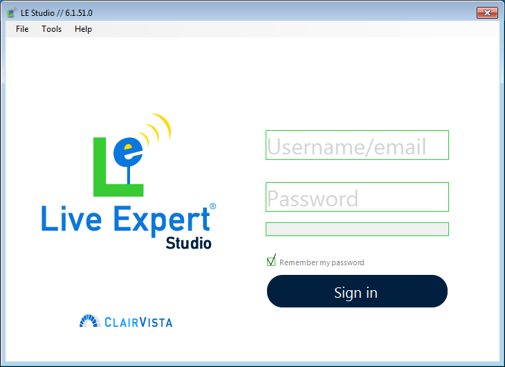
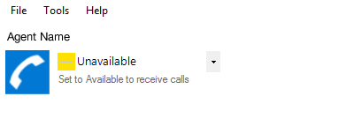
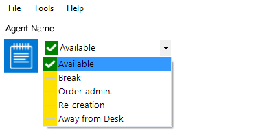
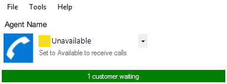
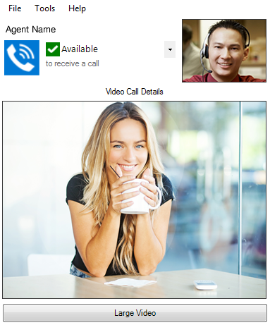

Studio User Guide¶
The purpose of this document is to review how to use the Live Expert Studio and its many features.
Getting Started¶
Before you continue with this guide, the Live Expert Studio should already be installed, and you should have received a username and password.
Starting the Live Expert Studio¶
To launch the Studio, simply double-click the shortcut located on the Windows Desktop, Start Menu, or Taskbar.
Signing In¶
To sign in, simply enter your Username and Password, then click the Sign in button. Selecting “Remember my password”, saves your Username and Password for subsequent sign ins to the Studio.
Overview¶
The Studio is organized into the following sections.

| # | Label | Description |
|---|---|---|
| 1 | Menu Bar | File, Tools, and Help context menus |
| 2 | Status Icons | Informative status and availability icons |
| 3 | Video | Live video stream |
| 4 | Information Call | attribute details and statistics |
| 5 | Call Controls | Customizing, transferring, and ending calls |
| 6 | Content Tabs | Browsers and call specific content |
| 7 | Content Controls | Print and share tab content |
Agent Name Display¶
Your name, as it will be visible to others, is displayed beneath the menu bar. When you first sign in, the Status Indicator will show that you are Idle and you will not receive any Call Invitations until setting yourself to be Available.
Status Indicator¶
Below the Agent Name Display is a blue icon that communicates the current status of the Studio Workflow.
| Icon | Status | Description |
|---|---|---|
| Idle | While you are available you may see this icon, indicating that you are currently inactive. | |
| In Call | The In Call status is automatically set by the system when an agent accepts a video call invitation. The In Call status is in effect until the call is ended | |
| After Call Work | After a call is completed, you have an opportunity to enter a call type and notes. Once you save call notes you will becoming available again. |
Availability Flag¶
The Availability Flag is displayed next to the Status Indicator in the Studio control panel.
You may find that you also have custom Unavailable Statuses to better identify utilization by different types of activity, as shown above.
| Icon | Status | Description |
|---|---|---|
| Unavailable | Unavailable experts never receive a call invitation. The default status when logged in, this is set when you refuse a call invitation or do not respond within the allotted time. | |
| Available | The Available status means that the agent is ready to accept video call requests from customers. The agent should set this status after logging in. |
Queue Indicator¶
The Video Call Controls pane includes an indicator when there are customers waiting in the call queue. The Queue Indicator is located below the Status Indicator and Availability Flag.
Video¶
During a call, your local video will be displayed in a small window, with the endpoint’s video taking the primary focus.
Tip
Look directly into the camera. It may be tempting to look at the customer in when speaking, but the experience will be more beneficial for the customer, the more the agent looks directly into the camera.
Studio Tabs¶
The LE Studio includes several tabs along the top of the LE Studio window which help the agent find and share information and conduct administrative tasks.
Web Browser & Intranet¶
These tabs are web browsers embedded inside the LE Studio. They function like any normal web browser.
To share content from the web browser, simply click on the share button that resembles a paper airplane.
Session Setup Helper Tab¶
The Session Setup Helper tab is organized into the following sections. 1 2 3 5 4 7 6 8
Call Type & Status¶
This section will display options to update the current type on the left-hand side, which will inform what Script should be displayed and what is expected of the Customer’s View, as a result.
Notification (Survey Response) Tab¶
The Survey Response tab is optionally enabled in the Live Expert Enterprise.
Similar to the Notifications Panel, this Studio Tab displays a table of all notifications received by the logged in agent for the current day.
Notifications¶
Currently the only Notifications supported within the Live Expert Studio are Post-call Survey Responses. Others may be added in the future.
Alert¶
Alerts are displayed for 10 seconds before collapsing, or until the close button (X) is clicked. Only one alert is displayed at a time, and clicking the body of an alert will open a window displaying the entire contents of a Notification.
Panel¶
The Notifications Panel, opened via the Icon in the upper-right hand corner, expands to display the 40 most recent notifications received in the current day, from most- to least-recent.
Studio Workflow¶
Call Invitation¶
The Expert Enterprise server is aware of the status and expertise of every agent logged into the system. When a customer requests an agent, the Expert Enterprise determines which agent is available and best qualified to address a customer’s interest. The Studio presents a video call invitation form with information about the call including any Custom Session Fields (see the Enterprise User Guide) and plays a ring tone for the selected agent.
The agent may accept the invitation and start the video call by clicking the Answer button.
Declining an invitation sets the agent’s status to Unavailable and puts the customer in queue for another qualified agent.
Video Call Process¶
Tip
Greet the customer with a smile. It’s just as important to greet the customer with a smile and friendly tone as it is when in a traditional retail service environment.
Tip
Speak Slowly & Clearly. In many cases, using the Live Expert system will be the first time customers have used video-chat technology for customer service. To help set the pace and tone for the video call, it is important for the agent to lead by example, speaking slowly and clearly. The customer will likely follow the lead, resulting in a positive experience for both participants.
Video Call Controls¶
Share content, adjust volume, and restart or transfer calls easily.
Text Chat¶
In certain cases, it is helpful to have the ability to send a text chat message to the LE Anywhere customer’s screen using the Text Chat tab. Type the message and click send. The message is presented to the customer.
Ending a Call¶
Click the End Call button at the conclusion of a video call. A confirmation dialog is presented.
Once the call is ended the Call Notes tab is presented for the agent to complete documentation about the video call, including customer information (if required) and call reason and disposition.
After the Call Notes are completed, the agent is automatically set to Available status so they can receive video call invitations.